Анна Селезнёва, Spiral Scout
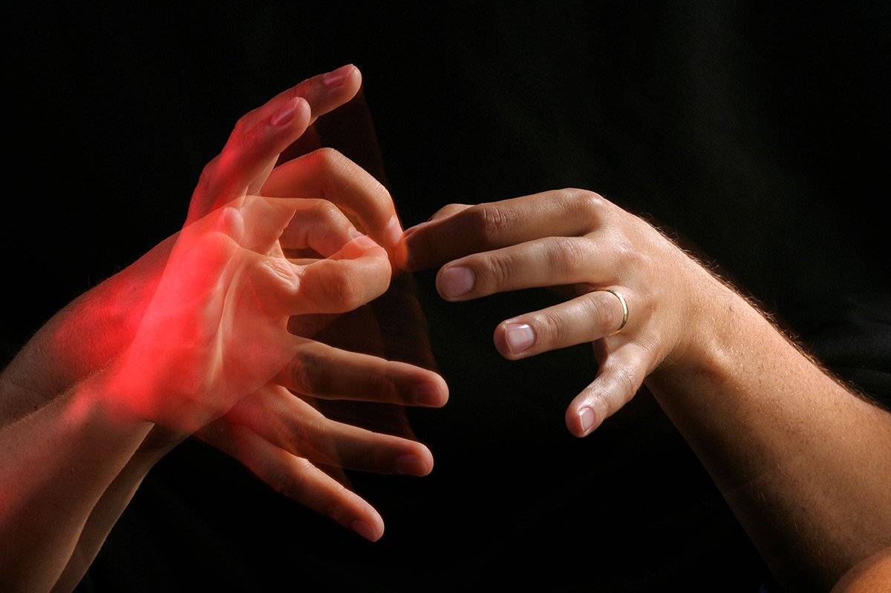
Источник картинки: NewScientist
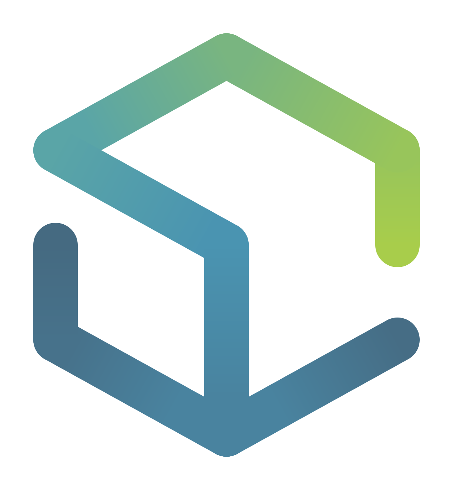
Web Standards Days, Минск, 1 декабря 2018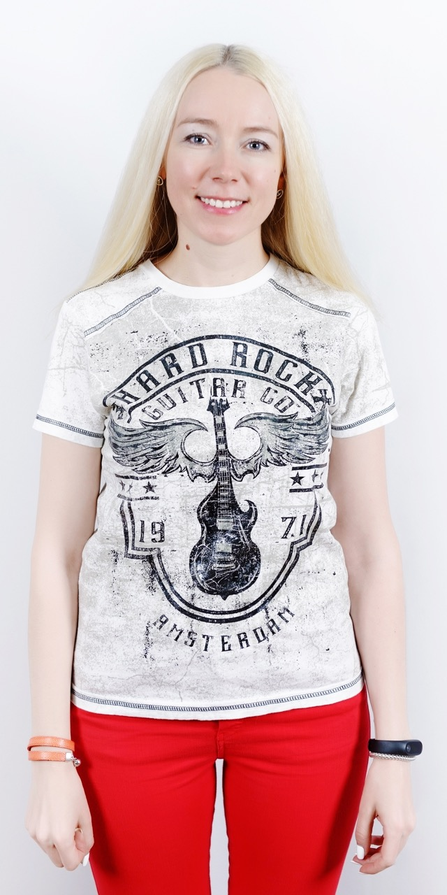
Анна Селезнёва
Lead frontend developer @ Spiral Scout
#freehugs
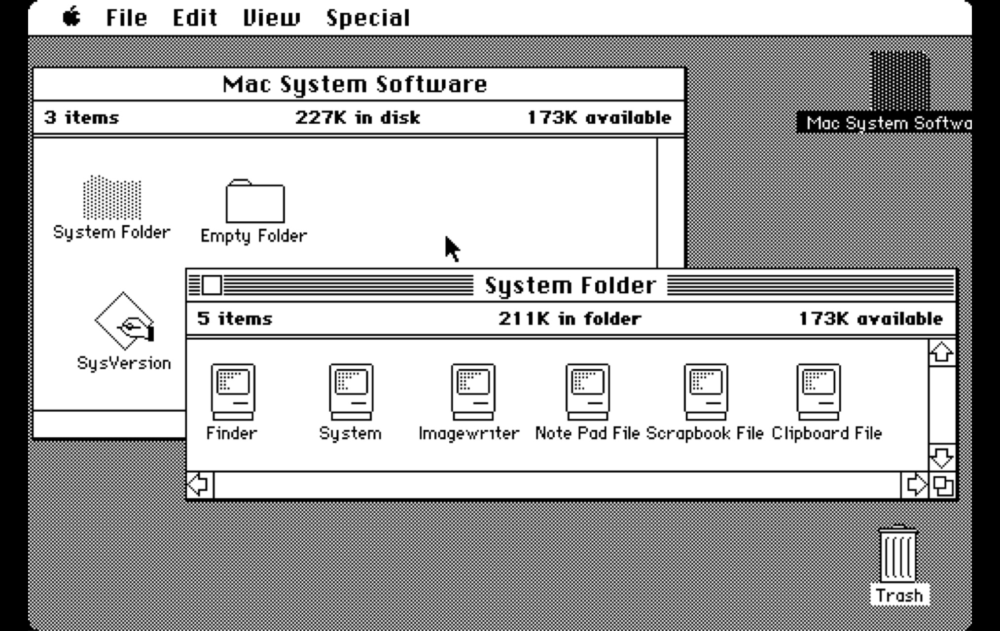
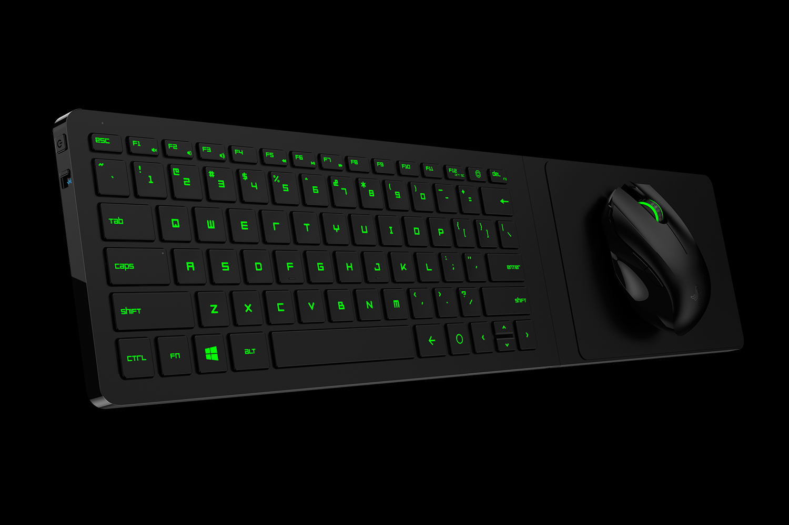
Источник картинки: VRDB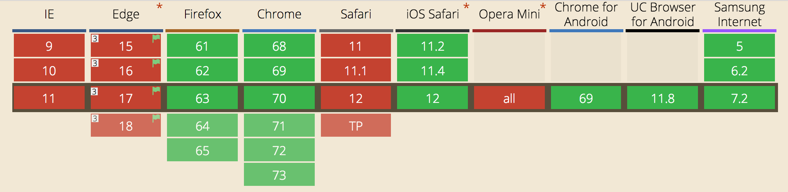
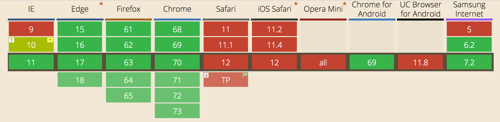
Презентация: patrickhlauke.github.io/getting-touchy-presentation
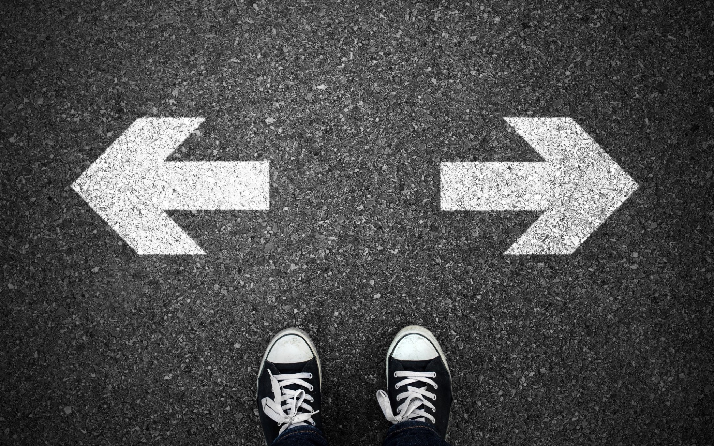
Источник картинки: Medium
if (window.PointerEvent) {
target.addEventListener('pointerdown', (event) => {
// handle event
});
} else {
target.addEventListener('touchstart', (event) => {
event.preventDefault();
// handle event
});
target.addEventListener('mousedown',(event) => {
// handle event
});
}
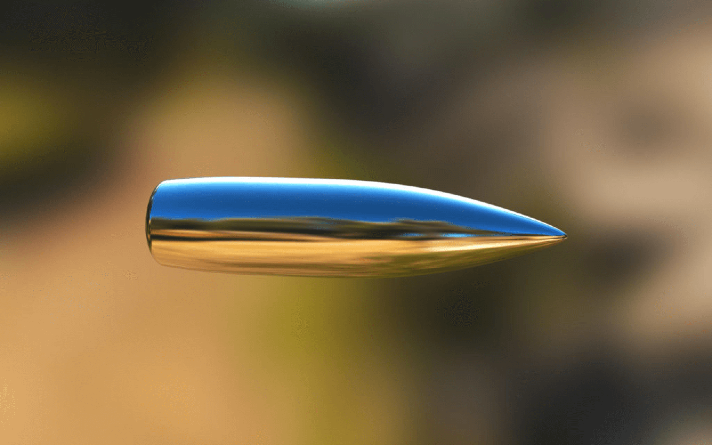
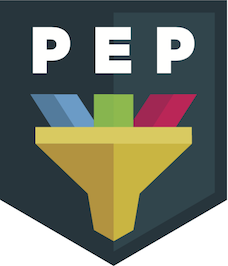
onPointerDown, onPointerMove, onPointerUp,
onGotPointerCapture, onLostPointerCapture,
onPointerEnter, onPointerLeave,
onPointerOver, onPointerOut,
onPointerCancel
pointerdown
touchstart
mousedown
downpointermove
touchmove
mousemove
movepointerup
touchend
mouseup
up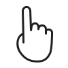
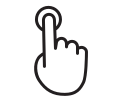
Назначение:
События:down
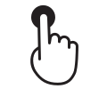
Назначение:
События:down + up
click
(~ 300ms)
Исследования Patrick Lauke (Suppressing 300ms delay):
<meta name="viewport" content="width=device-width">
touch-action: manipulation (Pointer Events)
Назначение:
События:down + move + up
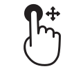
Назначение:
События:down + move + up
<div draggable="true"> </div>
События:
dragstart, drag, dragend
dragenter, dragover, dragleave
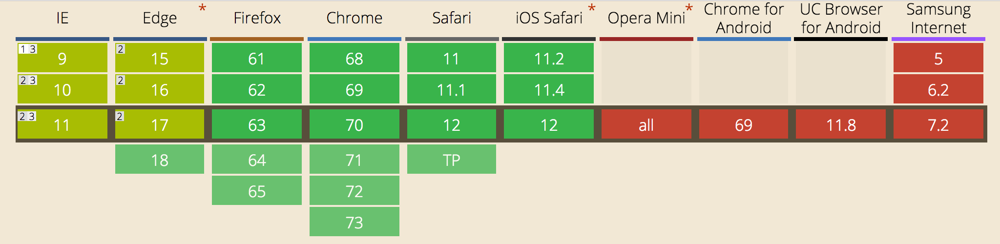
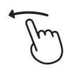
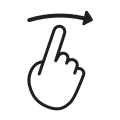
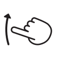
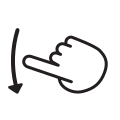
Назначение:
События:down + move + up
const dx = endX - startX;
const dy = endY - startY;
if (Math.abs(dx + dy) > distanceThreshold) {
if (Math.abs(dx) > Math.abs(dy)) {
if (dx < 0) {
// Swipe / Flick Left
}
}
}
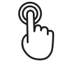
Назначение:
События:down + up
const currentTime = new Date().getTime();
const tapDuration = currentTime - lastTime;
clearTimeout(timeout);
if (tapDuration > 0 && tapDuration < timeThreshold) {
event.preventDefault();
// Double tap
} else {
timeout = setTimeout(() => { /* interrupted */ }, timeThreshold);
}
lastTime = currentTime;
Назначение:
События:down + up
requestAnimationFrame(detectHold);
function detectHold() {
if (duration < holdDuration) {
requestAnimationFrame(detectHold);
duration++;
} else {
// Hold
}
}
const fingers = event.touches;
const fingers = [];
function handlePointerDown(event) {
fingers.push(event);
}
function handlePointerMove(event) {
fingers.forEach(({ pointerId }, i) => {
if (event.pointerId === pointerId) fingers[i] = event;
});
}
function handlePointerUpOrCancel(event) {
fingers.forEach(({ pointerId }, i) => {
if (event.pointerId === pointerId) fingers.splice(i, 1);
});
}
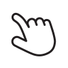
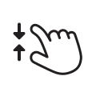
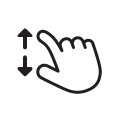
Назначение:
События:down + move + up
if (fingers.length === 2) {
const curDiff = Math.abs(
fingers[0].clientX - fingers[1].clientX
);
if (prevDiff > 0) {
if (curDiff > prevDiff) { /* Spread / Zoom In */ }
if (curDiff < prevDiff) { /* Pinch / Zoom Out */ }
}
prevDiff = curDiff;
}
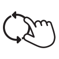
Назначение:
События:down + move + up
if (fingers.length === 2) {
const dx = Math.abs(
fingers[0].clientX - fingers[1].clientX
);
const dy = Math.abs(
fingers[0].clientY - fingers[1].clientY
);
const angle = Math.atan2(dy, dx);
// Rotate
}
target.addEventListener('pointerdown', (event) => {
const area = event.width * event.height;
// Use area
});
target.addEventListener('touchstart', (event) => {
const touch = e.touches[0];
const area = touch.radiusX * touch.radiusY;
// Use area
});
Жесты: pan, pinch, press, rotate, swipe, tap
const hammertime = new Hammer(element);
hammertime.on('rotate', (event) => {
// Rotate
});
window.addEventListener('orientationchange', () => {
// Handle orientation change
});
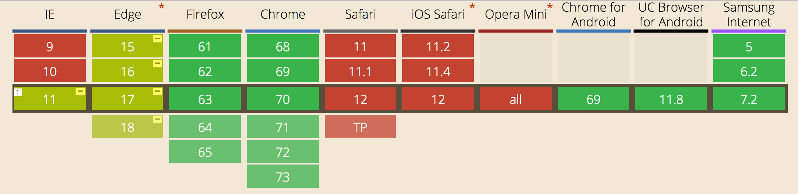
const orientation = screen.msOrientation || (screen.orientation || {}).type;
if (orientation) {
// 'landscape-primary' || 'landscape-secondary'
// 'portrait-primary' || 'portrait-secondary'
} else {
const angle = Math.abs(window.orientation);
if (angle === 90) {
// Landscape
} else {
// Portrait
}
}
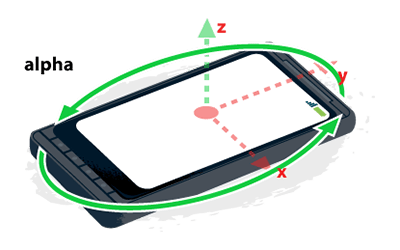
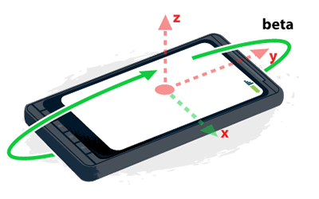
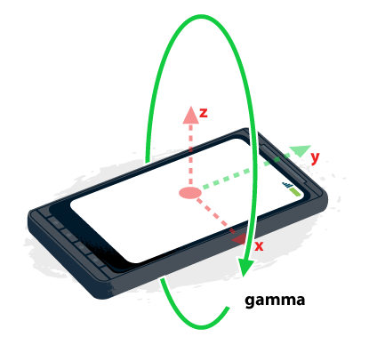
developers.google.com/web/fundamentals/native-hardware/device-orientation/
if (window.DeviceOrientationEvent) {
// Listen deviceorientation
}
if (window.DeviceMotionEvent) {
// Listen devicemotion
}
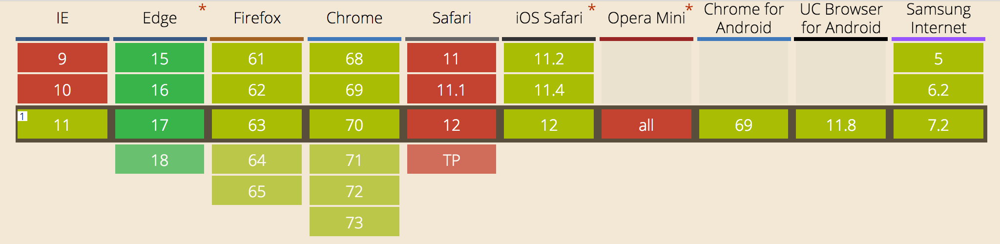
if (window.DeviceOrientationEvent) {
window.addEventListener('deviceorientation', (event) => {
const { alpha, beta, gamma } = event;
// Handle tilt
});
}
const cube = document.getElementById('cube');
cube.style.transform = `
rotateX(${beta}deg)
rotateY(${gamma}deg)
rotateZ(${alpha}deg)
`;
if (window.DeviceMotionEvent) {
window.addEventListener('devicemotion', (event) => {
const { x, y, z } = event.accelerationIncludingGravity;
// Handle shake
});
}
const dx = Math.abs(lastX - x); const dy = Math.abs(lastY - y);
const dz = Math.abs(lastZ - z);
if ((dx > threshold && dy > threshold) || (dx > threshold && dz > threshold)
|| (dy > threshold && dz > threshold)) {
currentTime = new Date().getTime();
if (currentTime - lastTime > timeout) {
// Shake
lastTime = currentTime;
}
}
lastX = x; lastY = y; lastZ = z;
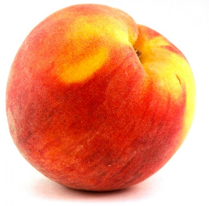
const handleTouchStartOrMove = (event) => {
const force = event.touches[0].force;
// Use force value (0..1)
};
// iOS 10+
element.addEventListener('touchforcechange', (event) => {
const force = event.changedTouches[0].force;
// Use force value (0..1)
});
const handlePointerEvent = (event) => {
const pressure = event.pressure;
// Use pressure value
};
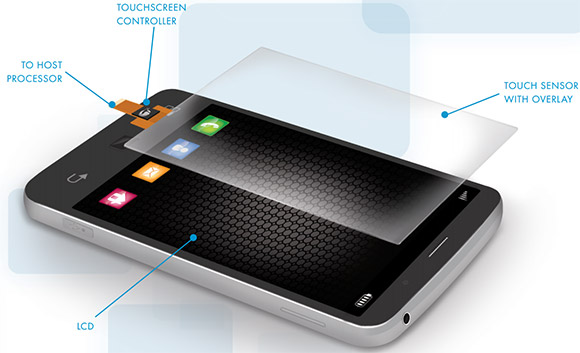
Источник: Sony Floating Touch technology explained
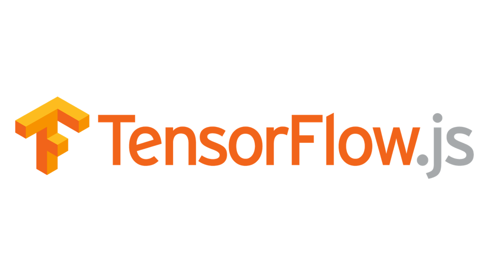
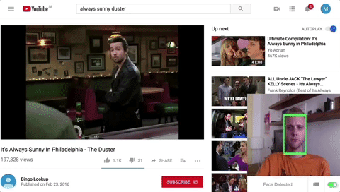
const faceDetector = new FaceDetector();
faceDetector.detect(imageOrCanvas)
.then((faces) => {
// Use faces array
}
.catch((e) => {
// Handle error
});
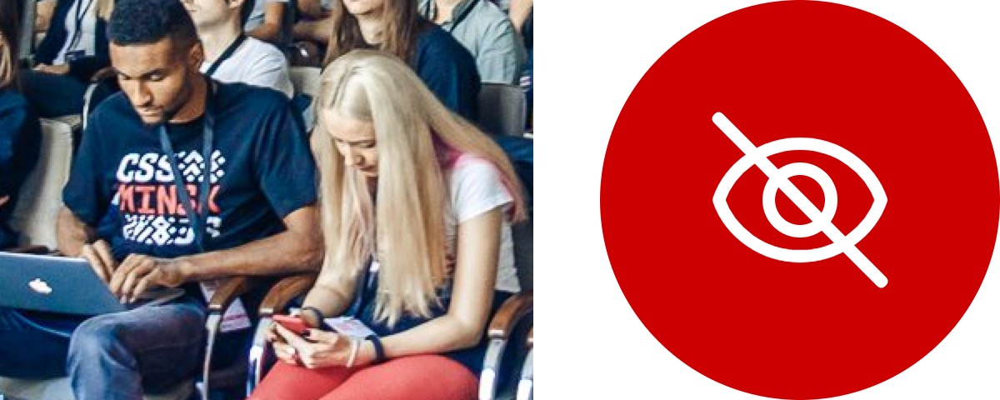
Главный редактор UX Planet Ник Бабич
Презентация: askd.rocks/pres/gestures